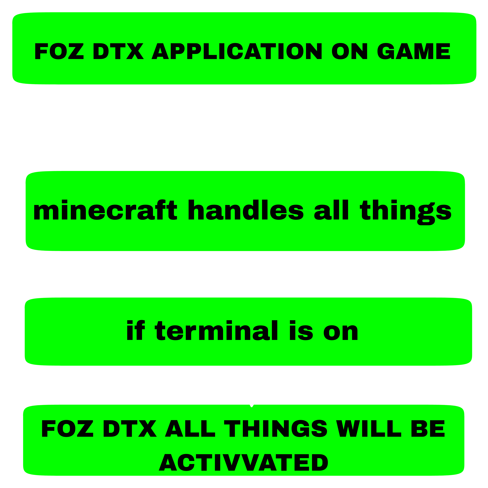
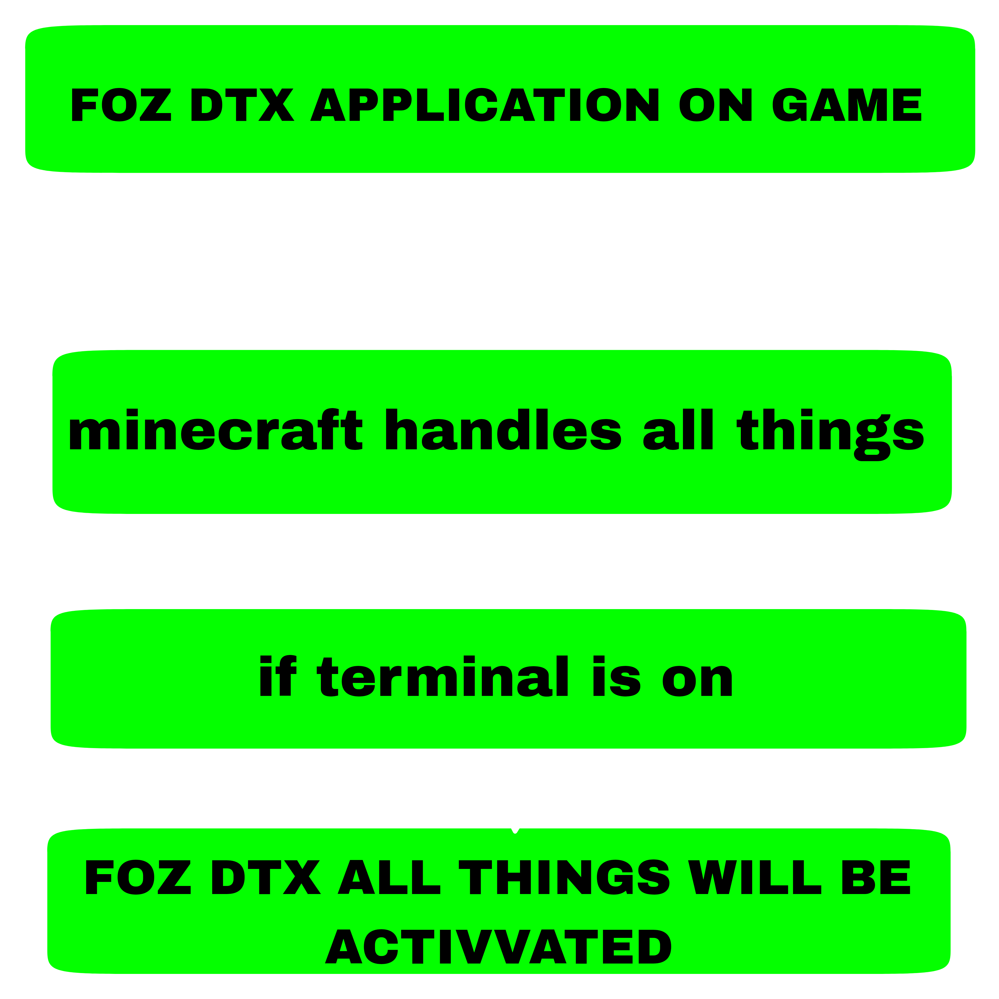

Thank you for visiting this page! In this page you will learn all things about foz dtx low level coding
 

FOZ DTX FILES IN RESOURCE PACKS
FOZ DTX all files are required for the foz dtx terminal and FOZ DTX some files are turnde on by minecraft it self . If you want to on all the foz dtx files so simply open the FOZ DTX terminal it will activate foz dtx custom upscalling technology . now files extension and there uses.
- .fozdtx - (This extension stores all the foz dtx language compressed and compiled code)
-
.3mf or .2mf - (These files are used by foz dtx terminal for edit or create shaders)
-
.cache - (These files are cahche files created by foz dtx terminal . These are not important if you want so you can delete these files)
-
.bin - (These files contain some decompressed data which is compiled and decompressed by foz dtx language compilation)
Let's learn about some coding of FOZ DTX . we will try to explain you all code perfectly!
Introduction
Why will you use FOZ DTX Terminal?
Ans.) If you want to edit FOZ DTX texture pack your self so you can use FOZ DTX terminal for edit that
Average Level FOZ DTX CODING
PRINT STATEMENT
print statement is use to print something in the terminal for that write print: "what you want to print" i.e : i want to print hellow world in terminal so i will write print: hellow_world
Examplem code :
COMMENTS
Comments are use to write any thing which you want without getting errors like you want to write 'this is a good terminal' so use comments else you will got errors .
Syntax for COMMENTS
// {Write your comments now }
Example
// This_is_a_good_terminal
MOV AND IOV
Is other programming languages there is a term variables which is use to store data similarly in FOZ DTX terminal there are MOV and IOV for storing the data . In Simple language you have seen the water tank in your house which stores the water in it or you have seen some plastic containers in your house your mothers stores food items in them so in programming languages or in FOZ DTX terminal there is a term 'data' you can relate data to food items or the water stored in thw water tank and you can relate the trems 'vearaible' or 'MOV and IOV' to the plastic containers stores food items or water tank stores water . yaa you can store rice into a plastic container and so also take rice as data and plastic containers as variables and MOV and IOV . You can store data inside variables in toher programming languages and in FOZ DTX terminal you can store your data in MOV and IOV .
Data types
Hmm , now you will have a question hey we was learning MOV and IOV so why we are now learning data types . Hmmm that's sound like a intresting question so intresting question have intresting answers and answer of this qusetion is also intresting and it is ' Data types are like gender in humans or Age in humans . Why? because if anybosy ask you for a person that he is boy or girl so firstly you will see him / her and then if he will boy then you'll say he is a boy but if she will girl then you will say she is a girl . So similarly programming languages and FOZ DTX terminal has some genders and they called data types . now a question arise 'What are that genders which programming languages and MOV and IOV has?' anwer is integers , strings , floats , booleans . Now you will scared and you will think what are that so donn't worry we will tell you from extreme basics and give you psisical examples for your clear understanding . Hmm integres are called numbers , strings are called alphabets which you will write used semicolons("") , floats are called decmals and booleans are called true or false . There is a graph for your understanding .
Integer
Numbers (1, 2, 3, 4,...)
Strings
Alphabets ("A", "B", "c", "d",...)
Floats
Decimals (1.1, 2.0, 3.4, 4.23,...)
MOV & IOV USES
Now get back to MOV & IOV . Now you have learned about datatypes and MOV & IOV now deep learn about it . MOV is use to store string data and IOV is use to store integer data now MOV & IOV's syntax
// MOV syntax
mov('unit of mov'): data of mov
// IOV syntax
iov('unit of iov'): data of iov
Note: MOV & IOV units are maximum 5 and minumum 1
Example code :-
mov( 1 ): Rice
mov( 2 ): Potato
mov( 5 ): Cake
iov( 1 ): 20
iov( 2 ): 30
iov( 3 ): 100
Sorry but currently we are working on our documentation so after work finish you will got all statement and also we are adding more codes and commands in our terminal

Copyright © FOZDTXRESOURCEPACK 2023